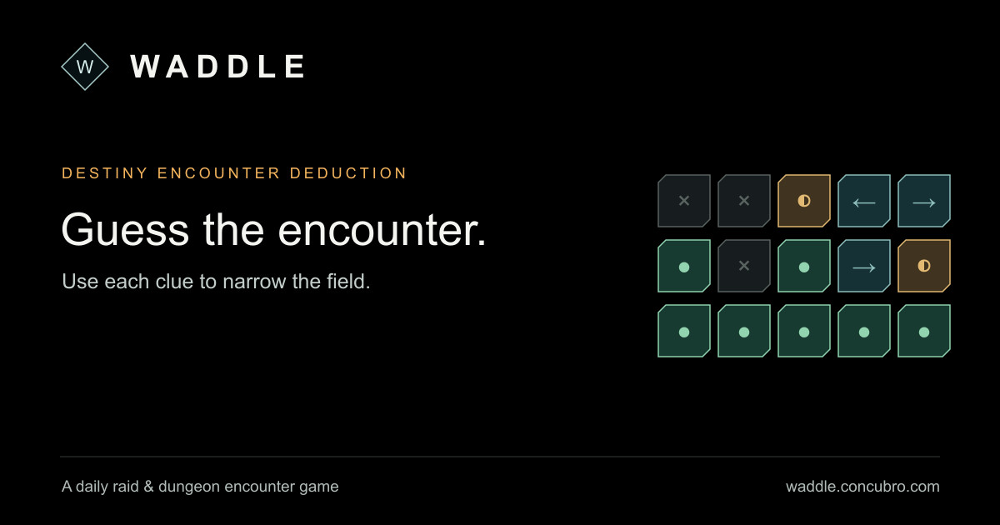

I made Waddle for a group of friends who have spent enough time in Destiny 2 raids to develop strong opinions about encounter trivia. It gives you a sequence of clues and asks which raid or dungeon encounter fits, either once a day or for as long as your memory holds out.

You can compare clues, search the encounter list, keep progress locally, and share the result without spoiling it. I had somebody else review the data because Destiny knowledge is exactly the sort of subject where somebody will be wrong with immense confidence.
It was originally inspired by a much worse version with a much better name: Raddle.
Then I spent approximately two weeks obsessively studying Bungie artist Joseph Biwald’s intricate radial clockwork designs, hoping to execute a respectable homage in the page’s backdrop. I ended up with, well, something!